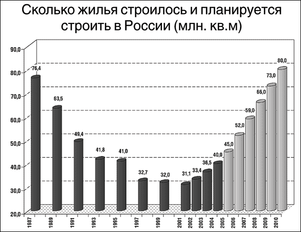

О бесплатности и патернализме
Говоря о зарплатах в СССР, очень часто упускают из вида, что, помимо наличности, у любого гражданина был целый комплекс удовлетворения базовых потребностей — либо вообще бесплатный, либо почти бесплатный.
Жилье, медицина, образование…
Кстати говоря, это было как раз следствием общественной собственности на средства производства © — выдача благ вовсе не была следствием доброй воли «дающего». Перестройку и прочие реформы вначале восприняли спокойно именно потому, что была железобетонная уверенность, что это всё — неотъемлемые права советского человека, и можно лишь что-то улучшать, но никак не ухудшать — и уж тем более лишать жилья и так далее.
Общенародная собственность именно что давала некий равный доход каждому, независимо от своей зарплаты. И значительный — посмотрите-ка на цену квартир и медобслуживания сейчас! А также — на платное образование, причем в ближайшем будущем платными станут и школы.
Ещё часть зарплаты тратилась на базовые нужды типа еды, повседневной одежды и так далее — т.е. на то, что нужно всем.
И, если рассуждать логически, исходя из того, что базовые потребности должны удовлетворяться — не должно быть «права на голодную смерть» или бездомность, как при капитализме! — то следует учитывать именно ту сумму, которая тратится сверх необходимого.
Т.е. если, скажем, уборщица получает зарплату в 90 рублей, а свежеиспеченный инженер — в 120, то разница тут не на треть. Если вычесть обязательные траты — скажем, 70 рублей, то получится 20 против 50 — в два с половиной раза. А если сравнить с зарплатой в 300 р, то разница уже получается на порядок.
Не было никакой «уравниловки»!
Были [достаточно] равные шансы на то, что если потребуется медицинская помощь, то она будет оказана, даже если нет ни копейки в кармане, что квартира не является чем-то недостижимым и так далее.
Но давайте поговорим о бесплатности.
Вот такое возражение от писателя Валерия Михайлова:
«Повторяю, бесплатное — это оплаченное из бюджета, то есть существующее за счёт изначально отобранных или недоплаченных людям денег. То есть на деле всё это оказывается платным, и платят за это все в течение жизни, а не те, кому это надо, и не когда это надо. Далее, подавая в виде бесплатного одолжения людям фактически оплаченное ими образование, Советская Родина делала это не в виде подарка, а в виде неоплатного одолжения, за которое человек должен был за копейки всю свою жизнь корячиться на эту Родину, да еще и быть ей благодарным за этот неоплатный долг. Ну а для того, чтобы человек мог корячиться на Родину, его нужно было лечить, а также обеспечивать жильем. Опять же бесплатное образование не было никаким одолжением Родины еще и потому, что: во-первых, Родине нужны были квалифицированные кадры; во-вторых, всеобщее образование было идеологическими понтами коммунистов; в третьих, позволяло с самого детства вбивать в головы детей всякую коммунистическую муть. Платным же оно не могло быть потому, что советский человек получал слишком мало для того, чтобы самому оплачивать все эти услуги.
Прекрасной альтернативой всей этой бесплатности была бы достойная оплата человеческого труда, на которую человек мог бы позволить себе заплатить за учебу, за медицинское обслуживание и за жилье. Вот только в этом случае человек был бы существом достойным, добивающимся всего своим трудом, а не вечным должником Родины, существующим на ее подачки, и обязанным отрабатывать свой мифологический вечный долг».
Да-да, какое насилие — лечить людей за бесплатно! Зато на цивилизованном Западе каждый имеет полное право помереть с голоду на улице — вот оно, достижение либерализма!
Один небольшой пример из личной жизни: потребовалась мне медицинская справка (права восстанавливал), и пошел я её получать на малой родине, в Урюпинске. Флюорография в обязательном порядке, очередь на несколько часов — проклятый тоталитаризм!
А вот потом мне позвонили домой и сказали, что надо подойти в клинику, есть что-то непонятное. Сделали — бесплатно! — уже рентген, убедились, что в легких всё чисто, подробнейше расспросили о самочувствии и успокоились только тогда, когда я объяснил, что как раз во время прохождения комиссии у меня была температура и жесточайший «грудной» кашель — вот что-то там и проявилось.
Обратите внимание: бесплатно и сами звонили.
Впрочем, вопрос медицины разберем позже отдельно. Давайте сейчас посмотрим пожелания «как надо».
Про «отобранное и недоплаченное» только что говорили выше. Откуда идет такая идея — я, честно говоря, понимаю с трудом. При всём своем знании психологии.
Чтобы так думать, требуется ровно одна извилина и не больше. Точнее: их может быть много, но вот на эту тему выделена только одна. В ней умещается ровно одна мысль: «я самостоятелен!».
Это, знаете ли, психологический уровень развития 4-5-летнего ребенка. Именно в этом возрасте ребенок начинает действовать: «я сам!», и при этом не представляет реальных трудностей жизни, видит и осмысливает лишь то, что касается лично его и непосредственно сейчас.
«Хорошо бы, чтобы мама мне дала денег, и я бы на все накупил конфет!». А что после этого будет с животом — пятилетку волнует очень мало, а уж о том, что бывает кариес — он вообще не имеет представления. Как и о том, что если он купит «несвежие конфеты» — то медицина, от «скорой помощи» и до реанимации, тоже откуда-то берется…
Обратите внимание: обычно психологи говорят, что психологический возраст подобных инфантильных индивидов, которые протестуют «против тоталитаризма вообще, включая полезное», — подростковый. Не совсем так: пубертатный период — это (в частности, важно для нашей темы) бунт «против системы», но подросток уже кое-что понимает в действительности.
А вот такие «анархо-индивидуалисты» — игнорируют действительность напрочь.
«…платят за это все в течение жизни, а не те, кому это надо, и не когда это надо…» — видите наивную веру «у меня такого не будет»?
Всё просто, возьмем для примера медицину. Да, пока не болеешь — это типа «не надо». А иногда ещё и возмущаются профилактическими осмотрами, прививками и т.д.!
Но вот если серьезно заболеть (для наглядности — пропустив начало заболевания из-за отсутствия профилактики), тогда что? Тут-то сразу попадаешь в ситуацию «кому это надо», причем — много и сразу.
Самое смешное — почему-то возмущает то, что при бесплатном лечении деньги «отбираются» у здоровых, но не возмущает то, что при капитализме медицинская страховка — это ровно то же самое, но только её может и не хватить, что характерно. А на серьёзную операцию — хватит лишь у самых богатых.
Интересен также выверт сознания, предлагающий альтернативу «достойная оплата человеческого труда, на которую человек мог бы позволить себе заплатить за учебу, за медицинское обслуживание и за жилье».
Сравниваем: имярек имеет практически бесплатное жилье, бесплатные медицину и образование, при этом получает еще M наличных, в сумме — N рублей; второй вариант — человек получает N рублей, из которых он тратит на жилье, медицину и образование, и остается на руках M рублей.
В чём разница, если в обоих вариантах на руках M денег, а суммарно — N?
Для фетишиста «свободы» определяющим является именно то, что человек сам тратит деньги на всё и «имеет свободу» не лечиться, жить на улице и не получать образование (правда, денег у него тогда будет, скорее всего, меньше, чем N). На вопрос «и нафига такая свобода» ответа не будет — что вы хотите от фетишиста?
На самом же деле разница в патернализме.
Социал-дарвинизм деструктивен для социума (далее разберем подробно). Проще говоря, есть множество людей, которые могут приносить пользу честным трудом и творчеством, но при этом не обладают «коммерческой жилкой», а то и попросту беспомощны в бытовых ситуациях. Типаж «гениальный рассеянный ученый», например.
Социалистический подход — патерналистический, он исключает необходимость тратить ресурсы на выживание, на продажу себя и так далее. Есть способности — можно получать высшее образование, ситуации «на это нет денег» в СССР не было в принципе.
Ну совсем уж «на пальцах» — если у вас государственное жильё, то его практически невозможно лишиться (ведомственное жильё — это другое). А вот если «давать деньги на жильё на руки», то, конечно, фетишист свободы возрадуется, но в этом случае будет «свобода» оказаться жертвой мошенников, а то и преступников, которые вас просто убьют и подделают документы на квартиру. Или вынудят вас её продать — короче говоря, такое явление, как «черные риэлторы», при социализме невозможно.
Таким образом, либеральный подход попросту дает «свободу» быть обманутым и лишенным возможности удовлетворять базовые потребности. Сравните количество бомжей в СССР и сейчас в РФ — очень наглядно.
Давайте не будем валить всё в кучу, медицину и образование разберем отдельно позже, а сейчас поговорим о жилье.
Часто приходится слышать аргументы вида «а жильё тогда было не свое, а государственное, всё равно, что аренда сейчас!».
Не делайте мне смешно, как говорят в Одессе.
Просто сравните стоимость аренды квартиры у государства в СССР и аренды квартиры у частника сейчас. Обычно однокомнатная «хрущевка» с условной мебелью времен того же Никиты Сергеевича обходится в половину средней месячной зарплаты в регионе как минимум, ми где-то равно медианной.
Вот объясните мне, какая разница, кому принадлежит квартира официально — мне или государству, если:
1. Плачу я за проживание смешные деньги;
2. Я никак не могу потерять квартиру — стать жертвой мошенников или проиграть в карты — не суть.
3. В случае появления детей и т.д. — со временем они тоже получат квартиры бесплатно, а пока несовершеннолетние — то я, очень вероятно, получу квартиру побольше (зависит от количества детей).
4. Наследники продолжают жить в квартире без каких-либо проблем.
То, что в любом случае есть где жить — и если будут перебои с деньгами, и на старости лет — это, мягко говоря, дает уверенность в завтрашнем дне и возможность не корячиться за лишнюю копейку «на черный день».
Бессрочная аренда, передаваемая по наследству, отличается от собственности только по двум аспектам.
Во-первых, свобода продать квартиру. Что означает — остаться без жилья, далее понятно.
Во-вторых, свобода купить много квартир — но тут возникает вопрос: а много ли вы знаете способов честно заработать столько денег, чтобы хватило хотя бы на одну квартиру?
Таким образом, опять получаем, что ситуация изменилась таким образом, что мошенники и воры получают преимущество перед трудящимся народом. Характерное свойство нашей эпохи…
Знаете, что интересно? Патернализм бывает не только при социализме (но именно при социализме присутствует обязательно). Сторонники капитализма любят кивать на Японию — мол, какой рывок! И капитализм при этом, никакого социализма — учитесь, совки!
Давайте посмотрим внимательно.
Японское экономическое чудо создавали в 50-е годы прошлого века две категории людей.
Первые — это управленцы из Маньчжуго. В основном военные, так что ВПК там господствовал безраздельно. Но и весьма успешно: Маньчжурская промышленная база являлась очень серьезным фактором экономической мощи Японии во время войны. В 1955-1956-м начали возвращаться пленные из СССР, взятые в плен в ходе Маньчжурской операции. Они в течение 10 лет работали на стройках народного хозяйства в Сибири и хорошо освоили методы работы советской экономики. С этим опытом они активно включились в восстановление экономики Японии. Бригадный метод, «кружки качества», переходящие вымпелы, приоритет морального стимулирования над материальным — все это было японцами заимствовано в СССР.
Японская система оплаты труда весьма мало завязана на конечный результат. Она зависит от ступени, которую работник занимает в иерархии. А движение по ступенькам, в свою очередь, связано преимущественно с длительностью его работы. Совершенно невозможно, чтобы молодой выпускник ВУЗа стал начальником цеха или тем более руководителем предприятия. Чаще всего ему светит место квалифицированного рабочего, и лишь со временем, показав свои качества организатора своего рабочего процесса, он может рассчитывать стать, например, мастером, и двигаться по карьерной лестнице дальше. Исключено также, что работник, например, недовольный слишком медленным карьерным ростом, ушел на другое предприятие. Это будет рассматриваться как предательство, и если его даже возьмут на другой завод (что также вряд ли), карьеры ему там не видать вообще никакой.
Японцы и сейчас отдыхают всем коллективом после работы и так далее.
Упора на коллективизм там куда больше, чем было в СССР.
Осенью 1991 г. в Москве, в Академии труда и социальных отношений состоялся советско-американский симпозиум, на котором были и японцы. Вот что сказал там японский миллиардер Хероси Теравама в ответ на разглагольствования советских экономистов и социологов о «японском чуде»:
«Вы не говорите об основном. О вашей первенствующей роли в мире. В 1939 г. вы, русские, были умными, а мы, японцы, дураками. В 1949 г. вы стали еще умнее, а мы были пока дураками. В 1955 г. мы поумнели, а вы превратились в пятилетних детей. Вся наша экономическая система практически полностью скопирована с вашей (т.е. сталинской эпохи), с той лишь разницей, что у нас капитализм, частные производители, и мы более 15% роста никогда не достигали, а вы же — при общественной собственности на средства производства — достигали 30% и более. Во всех наших фирмах висят ваши лозунги сталинской поры». (цит. по А.Шабалов, «Одиннадцать ударов товарища Сталина», Ростов-на-Дону, 1995 г.)
Очень рекомендую прочесть «Советскую цивилизацию» С.Г. Кара-Мурзы. Я с ним согласен не во всём — его часто заносит в интернационализм, а иногда и рассуждения бывают с натяжкой — увлекается и начинает оправдывать и то, что очевидно было недостатком.
Но во многом он рассуждает весьма здраво, и, главное, оперирует фактами. Приведу его аргументы (я с ними согласен, несколько переформулирую и дополню).
Жилье в советской цивилизации
Жильё. Пока человек имеет жильё — он личность. Бездомность — совершенно иное качество, аномальное состояние выброшенного из общества изгоя. Бездомные очень быстро умирают. Поэтому право на жильё есть одно из главных выражений права на жизнь.
У русских и у жителей Запада принципиально разная психология в плане жилья. На Западе считается вполне нормальным переезжать из города в город, меняя работу, и так далее. Идеал капиталиста — мобильный наёмный работник, который сам перемещается к месту эксплуатации.
Для русского же очень важно именно что своё, личное жилье. Не обязательно de jure, но de facto — чтобы оно не воспринималось как временное, как номер в гостинице. Поэтому либеральное «на Западе большинство снимает квартиры, и вы также делайте» в России не пройдет как норма.
В СССР на определенной стадии развития пришли к тому, что право на жильё было введено в Конституцию, стало одним из главных прав. Жилплощадь предоставлялась «по головам» (были льготы кандидатам и докторам наук и т.п.). При этом человек имел право не просто на крышу над головой, а на достойное жильё. Иными словами, была установлена норма, и если она не обеспечивалась, люди имели право на улучшение жилищных условий.
Право на улучшение! Слова эти, бывшие в советское время привычными, ещё не затерты в памяти. А ведь надо в них вдуматься. И это было не декларативное право, не идеологический миф, а обыденное социальное явление. На 1 января 1990 г. в СССР на учете для улучшения жилищных условий состояло 14256 млн. семей и одиночек — 23% от общего числа семей и одиночек в стране. И из года в год 13% из стоявших на учете получали квартиру (или несколько квартир, если большая семья разделялась).
Уравнительная жилищная политика была осознанной и планомерной — государство оплачивало 85% содержания жилья. Вот справка Госкомстата СССР: «В 1989 г. в бюджете семей рабочих и служащих расходы по оплате квартир не превышали одного процента, а с учетом коммунальных услуг — 3% общих расходов. Оплата одного квадратного метра жилой площади составляет в среднем за год 1 руб. 58 коп., или 13 коп. в месяц. Затраты на содержание государственного и общественного жилищного фонда в прошлом году составили более 13 млрд. руб., из них свыше 2 млрд. — за счет квартирной платы, около 12 млрд. — дотации государства». («Социальное развитие СССР. 1989», М., 1991)..
Право на жилье обеспечивалось ресурсами, государство строило много жилья. Смысл отказа от советского строя прекрасно виден из динамики жилищного строительства (Госстат, 2005 г). Данные после 2005 специально искать лень — но тут важен именно спад вследствие отказа от социализма.

Подобный резкий перелом этой динамики наблюдается во всех странах, имевших, по примеру СССР, уравнительную жилищную политику и отказавшихся от нее ввиду принятия программы МВФ. Переход от распределения к рынку сразу делает жилье недоступным для большинства населения. И жилищные условия этой части населения начинают ухудшаться, хотя в силу своей инерции этот процесс не сразу заметен.
В СССР жилищные условия населения медленно, но неуклонно улучшались.
Усилиями творческой интеллигенции™ в массовом сознании было создано ощущение, что чуть ли не полстраны живет в коммуналках. Реальность же была такова: в 1989 г. в городских поселениях СССР 83,5% граждан жили в отдельных квартирах, 5,8% в общих квартирах, 9,6% в общежитиях, 1,1% — в бараках и других помещениях. Чтобы проклинать за «коммуналки» советский строй, надо было просто не считать за людей ту треть населения даже богатого Запада, которая проживает именно «в иных помещениях» и считала бы за счастье иметь собственную комнату в общей квартире. О трущобах Рио де Жанейро, в которых без воды и канализации живет 3 млн. человек, и говорить нечего.
В жилищной сфере отказ от «уравниловки» означает качественный скачок — бедняки постепенно потеряют жильё. Этот процесс идет быстро: по данным МВД, уже в 1996 г. в России было около 4 млн. бездомных. Б.Ельцин в 1992 г. обещал, что Россия финансирует устройство ночлежек (он их мягко назвал «ночными пансионатами»). Из этого следует, что обнищание с потерей жилища было предусмотрено в программе реформ, которые просто не довели до полностью либерального конца.
О покупке чьих квартир взывают тысячи расклеенных по Москве объявлений? Квартир обедневших людей, которые «уплотняются», чтобы совместно проесть жилплощадь родственника или друга. А потом? Заболел ребенок, надо денег на врача да на лекарства — и продаст мать квартиру…
Далее Кара-Мурза подмечает очень верно: «люди, отказавшиеся от уравнительных принципов и неоднократно подтвердившие этот свой выбор, продолжают по отношению к себе лично требовать именно уравниловки».
Я не соглашусь с автором в вопросе «сами осознанно голосовали против социализма» — как потому, что толпа не мыслит, а поддается пропаганде, так и потому, что надо быть очень наивным, чтобы верить в честные выборы и прочие результаты голосований. Да и если подсчеты честны — то решения могут просто приниматься «какие надо», невзирая на волеизъявление народа, как было в случае распада СССР. Референдум — с огромным отрывом! — «против», а Ельцин с двумя подельниками подписал документ, и все.
Тем не менее, явление стоит внимания, цитирую Кара-Мурзу:
«Зимой 2001 г. множество людей, одетых в норковые шубы и дубленки, выходили на улицы Владивостока и других городов Приморья с плакатами “Хотим жить!’ Так они требовали, чтобы государство обеспечило их дома теплом. Большинство этих людей отвергали советскую уравниловку — распределение благ не на рыночной основе, а уравнительно, “по едокам”. Очевидно, что тепло — одно из таких жизненных благ, и оно также может предоставляться или через рыночный, или через уравнительный механизм. Эти образованные люди не могли этого не понимать, когда голосовали против советского строя.
Согласно антиуравнительным установкам этих людей, были закрыты нерентабельные шахты Приморья. В советском хозяйстве, ориентированном на потребление, а не на прибыль, эти шахты были разумны и эффективны, а в обществе, основанном на конкуренции, они неразумны и неэффективны. Это образованные люди также должны были понять, и об этом их предупреждали. Таким образом, тепло в Приморье стало очень дорого. Грубо говоря, оно этим дамам в советских норковых шубах не по карману. Согласно их собственным, выстраданным антисоветским принципам, эти дамы должны были тихонько лечь и замерзнуть. Как сказал Мальтус, “природа повелевает им удалиться, и не замедлит сама привести в исполнение свой приговор”.
Сделав выбор в пользу рыночного распределения благ (удовлетворение платежеспособного спроса) и отказавшись от уравнительного (удовлетворение потребности), жители Приморья четко и определенно отказались от права на жизнь как естественного права. Отказ от уравнительного распределения в чистом виде означает, что право на жизнь имеет лишь тот, кто может заплатить за витальные, необходимые для жизни блага. И государство при этом обязано только обеспечить свободу рынка.
В 2001 г. стало очевидно, что большинство жителей Приморья купить тепло по его реальной рыночной цене не могут. Потребность есть, а платежеспособного спроса нет. Поэтому плакат “Хотим жить!” смысла не имел. На этот плакат Греф резонно может ответить: “Ну и живите на здоровье, никто вас не убивает”. Люди в таком мысленном диалоге, конечно, завопят: “Мы замерзаем. Мы не можем жить без отопления!”. А Греф столь же резонно им ответит: “Вы имеете полную свободу покупать тепло и энергоносители — хоть у Березовского, хоть в Венесуэле. Но вы не имеете права требовать их от государства. Это право вы имели, но сами его выплюнули, когда сидели у телевизоров 4 октября 1993 г.” И тут выяснилось, что люди просят именно уравниловки — предоставления им тепла не через рынок, а как при советском строе — “по едокам”. Они хотели бы, чтобы им локально, в порядке исключения, вернули определенную часть советской уравнительной системы. По мере того, как власть будет продавливать жилищно-коммунальную реформу, таких желающих будет становиться все больше и больше.
Важно подчеркнуть, что всю эту интеллигенцию Приморья никак нельзя заподозрить в неискренности, в желании “проехать за чужой счет”. Она действительно не понимает, что означало её требование отказа от уравниловки — “об отоплении как-то не подумали”. Ее уверенность в праве на отопление и её ненависть к “равенству в бедности” расположены на разных уровнях сознания. Первое чувство — на уровне стереотипов европейски образованного сытого человека, а второе — на уровне ушедших в глубину подсознания архетипов “уравнительного крестьянского коммунизма”. Расщепление этих двух уровней и привело к тяжелейшему кризису.
В своем походе против уравниловки либеральная интеллигенция совершила ещё одну практически очень важную, хотя и не фундаментальную, ошибку. Она не подумала о том, что большие социально-технические системы, подобные отоплению, обладают очень большой инерцией. В течение длительного времени при советском строе они проектировались и строились исходя из принципа уравнительного распределения благ. Даже если при этом кто-то отлынивал от копеечной платы, это было несущественно — для государства было дешевле покрыть их долги, чем устраивать сложный и дорогой индивидуальный контроль.
В результате все потребители оказались скованы одной цепью. На Западе, насколько я мог заметить, потребление тепла в большой степени автономно. Если отопление электрическое, то и проблем нет — платит каждый за себя. Нет проблем и в богатых кварталах и домах — платежеспособность проверена. А в “промежуточном” слое, в дешевых, но еще приличных домах, центрального отопления часто вообще нет — газовые печки. Иногда даже устроенные так, что надо бросать монету, как в телефон-автомат, чтобы согреть комнату. Поэтому зимой в английских газетах нередки сообщения: замерзла супружеская пара пенсионеров при исправном отоплении — не было монет. Хотя климат там мягкий.
В России же разорвать коммунальную инфраструктуру путем расслоения по доходам не удается, надо перестраивать всю систему, что очень дорого и займет много времени. Поэтому “благополучная” часть общества, которая предполагала, что бедные пойдут на дно, а они выплывут и за свои денежки получат тепло, в своих расчетах ошиблась. Тепло приходится отключать всем — и даже замораживать и разрушать при этом всю систему жизнеобеспечения. Такая вынужденная солидарность».
Медицина платная
Теперь давайте подробно поговорим о медицине.
Часто можно слышать о том, какой-де ужасной была медицина в СССР. Чтобы не отвлекаться на воспоминания, отмечу, что мы говорим сейчас о социализме в целом, а не о СССР. Можно вспомнить Кубу, которая при всей своей бедности имеет великолепнейшую медицину (созданную как раз при помощи СССР). Можно посмотреть на претензии внимательнее и понять, что минимум половина претензий — не к излечению, а к тому, что-де лечили как-то грубо и неизящно, а не бегали вокруг на цыпочках, обслуживая любой каприз. Многие люди почему-то считают, что врачи должны не столько лечить, сколько бегать вокруг и всячески ублажать больного, сочувствуя и утешая. Системная ошибка: врач должен лечить, а не сочувствовать. Для последнего всегда были сестры милосердия и т.п. — это даже не медсестры, а просто обслуживающий персонал. Да, в СССР со сферой услугам были проблемы, в том числе — и в этой области, но это — уже совсем другая история.
Но еще логичнее — рассматривать вопрос именно по сути, по отличию социализма от капитализма. Напоминаю:
Цель капитализма как системы — максимизация прибыли.
Цель социализма как системы — справедливость для всего социума (нации).
Медицина должна быть бесплатной (ну, кроме пластической хирургии [когда нет в ней необходимости] и т.п.) — разве справедливо, когда больной еще и получает проблему «а как оплатить лечение»?
Медицина должна быть всеобщей — разве справедливо, если базовая потребность удовлетворяется не для всех?
Медицина, понятно, должна быть качественной — разве справедливо называть медициной то, что не ставит целью вылечить?
Да, я прекрасно помню анекдот: «Медицина может быть всеобщей, качественной и бесплатной, но только два пункта из трех». Но это — реальность позднего СССР, а социализм там последовательно разваливали, начиная с Хрущева. Опять же — на Кубе именно что три из трех, так что факт есть, а тезис с квантором общности опровергается единственным контрпримером.
Несколько упрощенно: при социализме у доктора есть интерес вылечить пациента как можно быстрее — незачем время лишнее тратить, стремлению «лечить» от того, чего нет — тоже неоткуда взяться.
Честно говоря, больше говорить о медицине при социализме нечего. И так понятно, что должно быть увеличение эффективности, улучшение и прочее, — вот и все.
Коммерческая же медицина обычно презентуется как «гораздо лучшее лечение за бóльшие деньги». Уже отсюда ясно, что если в одном месте прибавится, то в другом убавится: у одних будет лучшее, у других — худшее. И не знаю, как другие, а лично я не считаю, что богатство — это признак «лучшести» человека.
Это элементарно, но интересно и другое. С одной стороны, за свои деньги ты можешь получить любую помощь. С другой — пациент при этом постоянно попадает в ситуацию, когда его обувают. Просто потому, что так устроена система: главная задача любой коммерческой организации — зарабатывание максимального количества денег. Исцеление — просто средство для зарабатывания. Есть хозяин, который платит врачу зарплату. Естественно, он требует, чтобы врач себя окупал и приносил прибыль.
Как пример:
«…приходит человек в зубную клинику, говорит: у меня периодически щелкает челюстной сустав. Его отправляют делать панорамный снимок за 700 рублей. Потом проверяют те же зубы на чувствительность с помощью аппаратуры — как будто снимка недостаточно! — по 90 рублей за каждый зуб. Десять зубов — 900 рублей, вся процедура занимает пять минут. Затем человека отправляют к стоматоневрологу. Тот возьмет 300 рублей за прием, скажет, что заболеваний нервной системы не обнаружено. Затем за 500 рублей пациента посмотрит профессор, специалист по суставам, который даст совет: “А вы рот широко не открывайте. И, когда кушаете, жуйте на другой стороне”. Такой же совет человек мог получить бесплатно в районной поликлинике.» (статья А.Никонова в «Комсомольской правде» от 28/04/2004, цитата от стоматолога).
Но, может быть, денег берут много, а лечат при этом просто замечательно?
Константин Симоненко, «НеПутевые заметки о США»:
«…рука правая вывихнутая, висит плетью. Я не то, что писать, сигарету закурить не могу. А они — ничем помочь не можем, как заполните — вылечим. На мое предложение, заполнить им самим под мою диктовку, они твердо ответили, что у них такие правила. Нет, ну слава богу, там Олег был, который все это заполнил, а если бы не было?
В общем все было заполнено, меня посадили на каталку. Хотя с ногами у меня все было ОК, у меня с рукой фигово было. Завезли в маленькую комнатку, ждите, говорят. Жду. А ведь больно, вывихнутая кость пережала вены, и рука потихоньку начинает неметь. Короче, доходить я начинаю потихоньку.
Через полчаса заходит медсестра. “Плохо?” — спрашивает. “Плохо”, — отвечаю я. “Будем лечить”, — уверяет она, измеряет мне температуру, записывает это все в бюллетень и уходит. Полчаса опять никого нет.
Еще через полчаса заходит медбрат. “Плохо?”, — спрашивает. “Плохо”, — отвечаю я. “Будем лечить”, — уверяет он, измеряет мне давление, записывает это все в бюллетень и уходит. Полчаса опять никого нет.
Я начинаю дуреть и достаточно громко стонать. Через полчаса заходит еще одна медсестра. “Плохо?”, — спрашивает. “ХРЕНОВО!”, — отвечаю я. “Да вы не волнуйтесь, вылечим!”, — успокаивает она, и заставляет меня заполнить дурацкую анкету на отсутствие аллергенов на обезболивающее. Полчаса опять никого нет.
Короче, к тому моменту, когда ко мне все-таки пришел врач, прошло без малого два часа. Первое, что он мне сказал, это, мол, ты парень — счастливчик — с утра вывихнул, если бы в обед — часа четыре бы ждал. …
В общем, сделали мне рентген, вкололи какую-то гадость и вправили руку. Потом положили на каталку и вывезли в коридор, где и оставили. … Зову врача, спрашиваю: когда же меня в гипс закатывать будут? Врач так удивился: а зачем? Дали мне какую-то повязку марлевую на липучках, чтобы не приставал. Я в шоке. Когда я в Одессе руку вывихнул, меня по самое не хочу в гипс закатали, насколько я помню.»
Как-то не тянет на идеальную медицину, не так ли?
Когда-то давно, еще в 2007 году, часто цитируемый мной А. Кравецкий хорошо разобрал вопрос «Чем платная медицина отличается от бесплатной», использую дальше его статью.
Все, кажется, очевидно: одна платная, а другая бесплатная.. Однако нет, стоит привести эту вроде бы понятную мысль, сразу же материализуются апологеты Невидимой Руки Свободного Рынка и сообщают, что бесплатная медицина на самом деле тоже платная, только оплачивается из налогов. И что платная — куда как более справедливая, поскольку нет принудиловки, уравниловки и прочих ужасов социализма и каждый сам выбирает кому и за что платить.
В идеальном случае — да, все нормально. Здоровый человек никому не платит, что логично, заболевший платит за конкретные услуги, что тоже логично. И чего, спрашивается, во всем мире все упорно желают, чтобы медицина была бесплатной? А потому что есть нюансы. Причем — нюансы нехилых масштабов.
Если у человека насморк, то он обычно может выложить пятьсот рублей за прием терапевта. Тем более, не каждый же день у человека насморк. Но люди, мерзавцы такие, временами болеют болезнями похлеще. А за лечение чего похлеще 10000 условных единиц Общечеловеческих Ценностей большинство выложить не в состоянии. То есть, свободная рыночная медицина доступна в полном смысле этого слова только горстке мега-эффективных менеджеров. И только они в случае чего останутся в живых.
Проблема в том, что в живых остаться хотят абсолютно все, а не только рыночно эффективные. И тут-то бесплатная медицина и раскрывает свое преимущество: лечат всех нуждающихся. А оплачивается это налогоплательщиками. Несправедливо? Зачем здоровым оплачивать лечение больных? Что за бред? А затем, что переход здорового в больного иногда осуществляется за считанные секунды. И гарантия того, что через секунду тебе всё равно будут спасать жизнь, невзирая, что именно в этот момент у тебя нет на руках 10000 условных единиц (и вообще никогда не будет), оказывается благом, с легкостью перевешивающим мнимую несправедливость бесплатной медицины.
Некоторые апологеты из первого абзаца на этом месте растеряются и заклеймят советский тоталитаризм, поскольку сказать им больше нечего. Некоторые — из числа социал-дарвинистов — скажут, что так и надо, пусть всякие неэффективные повымрут, тогда останутся только эффективные, которые будут жить в роскоши и блаженстве. Однако относительно вменяемые апологеты, понимающие, что эффективный менеджер без неэффективного сантехника быстро потонет в гуано, будут искать возможность для иного маневра. Таковым маневром будет концепция страхования.
Её смысл в том, что люди платят понемногу и постоянно, но если припрет, то им дадут много и сразу. Не на руки, конечно, а целевым образом — на оплату лечения. При внедрении такой концепции риск дать дуба, если денег в нужный момент не окажется, снижается. На этом моменте вменяемые апологеты радостно потрут руки и не менее радостно объявят о тождественности бесплатной медицины и платной со страхованием.
Вот еще одна очевидная мысль перед нами. Тут сомнений ведь вообще быть не может, страхование решило проблему. И оставило свободу, которую либералы считаю своим фетишем. Мол, какая разница — всё равно вся медицина платная, только при социализме получаем что-то типа государственной принудительной страховки, а при капитализме — необязательная.
Помните рассуждения про жильё?
Тут — ровно то же самое: оставляется «свобода» помирать, если не заплатил за страховку. А также — заражать других во многих случаях, снижать работоспособность, передавать болезни по наследству и т.д.
Впрочем, вопрос страховки куда интереснее, чем просто «вы можете оказаться мез медицинской помощи», рассмотрим следующим пунктом, а пока — продолжим про следствия платности.
Главное отличие «делать людей здоровыми» от «получать прибыль» вызывает ряд «суботличий».
Во-первых, понятно желание каждого владельца поликлиники иметь деньги со своего предприятия. Но таковое желание присутствует и у владельца страховой компании, производителя лекарств и вообще у каждого владельца каждого звена «медицинской цепочки». С кого же они эти деньги будут получать? Правильно, с пациентов. То есть, при бесплатной медицине пациент оплачивает (через страховую компанию «Государство», если угодно) только себестоимость лечения. Которая складывается ровно из зарплат всех в нём задействованных (включая строителей больницы, слесарей и т. п.). При платной — вдобавок оплачивается и прибыль всех включенных в цепочку владельцев. Отличия в цене лечения радикальные (не говоря уже о том, что в бесплатной медицине на лечение могут быть ещё и дотации, деньги для которых будут получены, например, из дополнительных доходов с продажи предметов роскоши).
Во-вторых, получаем ситуацию, в которой качественно лечить как раз не выгодно. Вылечить больного — всё равно, что убить курицу, несущую золотые яйца. Поэтому платной медицине надо создавать видимость качественного лечения, но не долечивать ни в коем случае или даже вообще лечить от болезни, которой у пациента нет (см. выше пример с стоматологом). Больной должен ходить к врачу постоянно. В Америке давно уже доктор даёт рецепт всего на несколько дней, а потом, как лекарства кончатся, надо ещё раз заплатить за визит, и тогда доктор с удовольствием даст рецепт ещё раз.
Тут у апологетов включается вера в Благостность Невидимой Руки Свободного Рынка, и они заявляют, что всё само собой выправится, ибо те, кто будет лечить плохо, прогорят, а те, кто будет очень много загребать в свой карман, останутся без пациентов, поскольку их конкуренты перетянут больных более низкими ценами. В идеальном сферическом вакууме, для которого написана рыночная теория, возможно, так и было бы. Но в реальности для реализации всего этого необходим избыток предложения над спросом. А взяться ему неоткуда. Владелец не будет нанимать слишком много врачей и не будет строить избыточного количества палат в больницах. Ушедшие к другому пациенты — это косвенно недополученная им прибыль, но пустые места в больнице и незанятые врачи — прямой убыток. Второе, как легко догадаться, куда неприятнее для владельца, чем первое. Поэтому конкуренция реально будет у пациентов за место, а не у фирм за пациентов.
Далее. О снижении цен при рынке пишут все учебники, вещают пропагандисты и вообще каждая собака знает. Но цены почему-то не снижаются. Ни на что, кроме электроники. Да и там они снижаются вовсе не по причине конкуренции, а потому, что только таким образом можно продавать компьютеры и пылесосы тем, у кого они уже есть и нормально работают. В других же областях цены упорно растут. И это закономерно: выгоднее продавать меньше задорого, а не бороться за клиента снижением цен. Вот все так и делают. Кризис перепроизводства не случайно возможен только при капитализме.
Логично ведь, что себе в убыток владелец поликлиники её держать не будет. Да и прибыль три рубля в месяц его тоже не устроит. Цена не снизится.
И качество тоже не возрастет. Качество лечения может возрасти только по двум причинам: нерыночный контроль над медициной и насаждение соответствующего воспитания. И то и другое в концепцию Невидимой Руки не входит и даже противоречит. Поддельными лекарствами выгодно торговать даже при постоянном контроле отрасли со стороны государства, чего уж тут говорить про свободный рынок?
Обман в чём: утверждается, что пациент сам выберет хорошую больницу, что сделает существование плохих невозможным. В небольших населенных пунктах как-то сложно представить несколько конкурирующих больниц, знаете ли. А, главное, каждый человек не в состоянии быть специалистом во всех областях. Мало кто сумеет вовремя понять, что его лечат плохо. Даже если кто-то и поймёт — что толку? Один клиент ушёл, так другой придет. Прибыль от разницы между себестоимостью подделки и ценой её продажи такие мелочи покрывает. А в крупном городе клиенты не переведутся. В деревне на сто человек все, конечно, будут знать, что вон там лечат плохо, да только выбора у них не будет, поскольку даже одна больница в таком месте — чудо. При капитализме, имеется в виду.
Таким образом, чисто экономическим путем качество лечения улучшить невозможно, более того — оно неизбежно будет ухудшаться.
Поэтому на Западе к улучшению здравоохранения идут длинной дорогой — через суды, через принуждение государственного контроль над медициной и прочий тоталитаризм. Ни разу не рыночно.
Но тогда зачем платная медицина нужна вообще? Точнее, даже так: кому она вообще нужна? Вот тут, наконец, ответ действительно очевиден: собственникам лечебных учреждений, производителям лекарств, аптеками и т.п. Им от платной медицины действительно хорошо, а остальным — плохо.
Когда-то давно, еще в 50-е, нобелевского лауреата по экономике (забыл имя, к сожалению) спросили о рыночном обосновании медицины. Он провёл исследование, и даже он, официальный рыночник, заключил, что рынок в медицину вводить нельзя по элементарным причинам.
Во-первых, одним из необходимых условий работы рынка является полная информированность сторон об условиях сделки. В случае медицины пропасть в знаниях между больным и медиком настолько катастрофически велика, что «покупатель» услуги никак не сможет предотвратить любую манипуляцию «продавца».
Во-вторых, болезни сами по себе так непредсказуемы и обращение к медикам настолько в целом неравномерно, что ни о каком разумном «рынке» говорить в случае единичных размазанных во времени групп «покупок» не приходится.
Вот и все, собственно говоря. Что и требовалось доказать ©